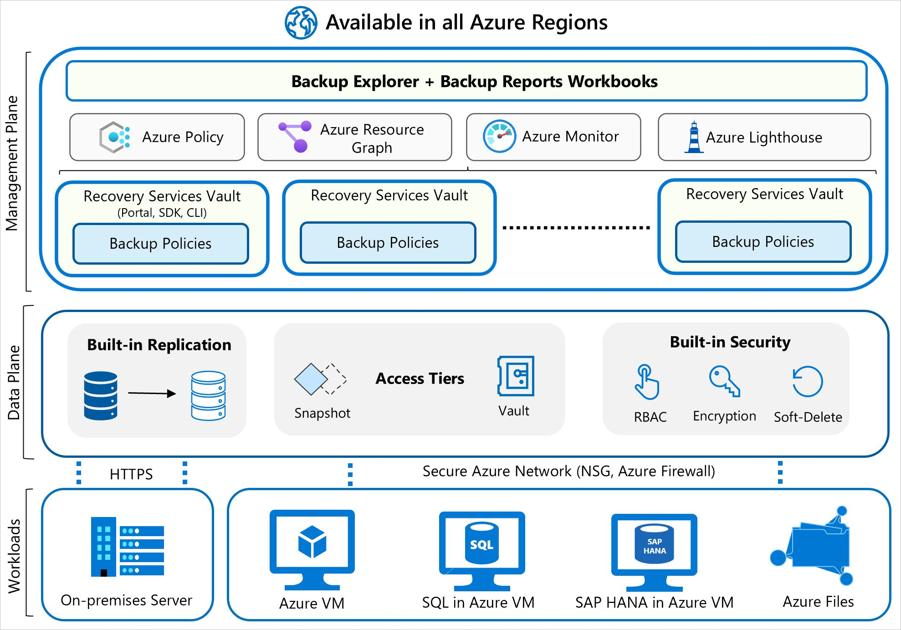

Backup
Backup locations
- Azure Backup stores the backed-up data in Recovery Services vaults and Backup vaults.
- For on-premises Windows machines, you can back up directly to Azure with the Azure Backup Microsoft Azure Recovery Services (MARS) agent. Alternatively, you can back up these Windows machines to a backup server, perhaps a System Center Data Protection Manager (DPM) or Microsoft Azure Backup Server (MABS). You can then back that server up to a Recovery Services vault in Azure.
- In UI, this is called Backup Center. Backup center allows you to have a single pane of glass to manage all tasks related to backups. Backup center is designed to function well across a large and distributed Azure environment. You can use Backup center to efficiently manage backups spanning multiple workload types, vaults, subscriptions, regions, and Azure Lighthouse tenants.
- Recovery Services vault and Backup vault are same. However Backup Vault is only for VM Backup.

Method

- Workload integration layer - Backup Extension: Integration with the actual workload, such as Azure virtual machines (VMs) or Azure Blobs, happens at this layer.
- Data Plane - Access Tiers: There are three access tiers where the backups could be stored:
- Snapshot tier - The snapshot is taken and stored along with the disk.
- Standard tier - Backup data for all workloads supported by Azure Backup is stored in vaults, which hold backup storage, an autoscaling set of storage accounts managed by Azure Backup.
- Archive tier - The backup data is moved to an offline state in the archive tier. Azure Backup for storing backup data, including their Long-Term Retention (LTR) backup data, with retention needs defined in the organization's compliance rules.
- Data Plane - Availability and Security: The backup data is replicated across zones or regions, based on the redundancy the user specifies.
- Management Plane – Recovery Services vault/Backup vault and Backup center: The vault provides an interface for the user to interact with the backup service.
RTO
Recovery Time Objective (RTO) is the target time within which a business process must be restored after a disaster occurs to avoid unacceptable consequences. For instance, if a critical application goes down due to a server failure and the business can only tolerate a maximum of four hours of downtime, then the RTO is four hours.
RPO
Recovery Point Objective (RPO) is the maximum amount of data loss, measured in time, that your organization can sustain during an event.
Azure Backup can provide backup services for the following data assets:
- On-premises files, folders, and system state
- Azure Virtual Machines (VMs)
- Azure Managed Disks
- Azure Files Shares
- SQL Server in Azure VMs
- SAP HANA (High-performance Analytic Appliance) databases in Azure VMs
- Azure Database for PostgreSQL servers
- Azure Blobs
- Azure Database for PostgreSQL - Flexible servers
- Azure Database for MySQL - Flexible servers
- Azure Kubernetes cluster
Support
Azure Backup supports the following scenarios:
- Azure VMs - Back up Windows or Linux Azure VMs Azure Backup provides independent and isolated backups to guard against unintended destruction of the data on your VMs. Backups are stored in a Recovery Services vault with built-in management of recovery points. Configuration and scaling are simple, backups are optimized, and you can easily restore as needed.
- On-premises - Back up files, folders, and system state using the Microsoft Azure Recovery Services (MARS) agent. Or use Microsoft Azure Backup Server (MABS) or Data Protection Manager (DPM) server to protect on-premises VMs (Hyper-V and VMware) and other on-premises workloads.
- Azure Files shares - Azure Files provides snapshot management by Azure Backup.
- SQL Server in Azure VMs and SAP HANA databases in Azure VMs - Azure Backup offers stream-based, specialized solutions to back up SQL Server, or SAP HANA running in Azure VMs. These solutions take workload-aware backups that support different backup types such as full, differential and log, 15-minute RPO, and point-in-time recovery.
Backup types
| Type | Description | Usage |
|---|---|---|
| Full | A full database backup backs up the entire database. It contains all the data in a specific database or in a set of filegroups or files. A full backup also contains enough logs to recover that data. | At most, you can trigger one full backup per day. You can choose to make a full backup on a daily or weekly interval. |
| Differential | A differential backup is based on the most recent full-data backup. It captures only the data that changed since the full backup. | At most, you can trigger one differential backup per day. You can't configure a full backup and a differential backup on the same day. |
| Multiple backups per day | Back up Azure VMs hourly with a minimum recovery point objective (RPO) of 4 hours and a maximum of 24 hours. | You can use Enhanced backup policy to set the backup schedule to 4, 6, 8, 12, and 24 hours (respectively) for new Azure offerings, such as Trusted Launch VM. |
| Selective disk backup | Selectively back up a subset of the data disks that are attached to your VM, then restore a subset of the disks that are available in a recovery point, both from instant restore and vault tier. Selective disk backup helps you manage critical data in a subset of the VM disks and use database backup solutions when you want to back up only their OS disk to reduce cost. | Azure Backup provides Selective Disk backup and restore capability using Enhanced backup policy. |
| Transaction Log | A log backup enables point-in-time restoration up to a specific second. | At most, you can configure transactional log backups every 15 minutes. |
Availability and Security
- Azure Backup also provides protection against malicious deletion of your backup by using soft-delete operations.
- A deleted backup is stored for 14 days, free of charge, which allows you to recover the backup if needed.
- You can choose from locally redundant storage (LRS), Geo-redundant storage (GRS), or zone-redundant storage (ZRS).
- If your three Azure VMs are deployed across multiple subscriptions or regions, you should note that Azure Backup doesn’t support cross-region backup for most workloads. However, it does support cross-region restore in a paired secondary region.
SQL Server
If your main concern is to only back up the SQL Server data, Azure Backup provides support for that as well. Azure Backup offers a stream-based, specialized solution to back up SQL Servers running in Azure VMs. This solution aligns with Azure Backup's benefits of zero-infrastructure backup, long-term retention, and central management.
Additionally, Azure Backup provides the following advantages specifically for SQL Server: - Workload aware backups that support all backup types: full, differential, and log - 15-minute recovery point objective (RPO) with frequent log backups - Point-in-time recovery up to a second - Individual database-level backup and restore
Enhanced soft delete
Enhanced soft delete is enabled by default for all Recovery Services vaults and Backup vaults. It protects against malicious or accidental deletion of backup data. Can be disabled for specific vaults and can turn Always On.
Backup Policy
Backup policy You can define the backup frequency and retention duration for your backups. Currently, the VM backup can be triggered daily or weekly, and can be stored for multiple years. The backup policy supports two access tiers: snapshot tier and the vault tier. By using the Enhanced policy, you can trigger hourly backups.
Selective disk backup: Azure Backup provides Selective Disk backup and restore capability using Enhanced policy. By using this capability, you can selectively back up a subset of the data disks that are attached to your VM. Then, you can restore a subset of the disks that are available in a recovery point, both from instant restore and vault tier. It helps you manage critical data in a subset of the VM disks and use database backup solutions when you want to back up only their OS disk to reduce cost.
Snapshot tier: All the snapshots are stored locally for a maximum period of five days, in what is called the snapshot tier. For all types of operation recoveries, we recommended that you restore from the snapshots because it's faster to do so. This capability is called instant restore.
Vault tier: All snapshots are additionally transferred to the vault for more security and longer retention. At this point, the recovery point type changes to "snapshot and vault."
How VM is backup
- For Azure VMs that are selected for backup, Azure Backup starts a backup job according to the backup frequency you specify in the backup policy.
- During the first backup, a backup extension is installed on the VM, if the VM is running:
- For Windows VMs, the VM Snapshot extension is installed.
- For Linux VMs, the VM SnapshotLinux extension is installed.
- After the snapshot is taken, the data is stored locally and transferred to the vault.
- The backup is optimized by backing up each VM disk in parallel.
- For each disk that's being backed up, Azure Backup reads the blocks on the disk and identifies and transfers only the data blocks that changed (the delta) since the previous backup.
- Snapshot data might not be immediately copied to the vault. It might take several hours at peak times. Total backup time for a VM is less than 24 hours for daily backup policies.
Restore VM
Restore a VM. 1. Backup for VM are only for the same Region and OS. But backup for SQL Server can be restore to different region. 2. If restore VM: - Restore to same region. - Restore to different region, must make sure the OS is same. 3. If restore VM to different region, you need to provide a new - Network interface - Private IP - Public IP - Availability set/zone - VNet - Subnet - Resource Group - Name (New) - Storage Account for disk - Disk Type 4. If restore OS disk only, you can: - Restore to same region. - Restore to different region, must make sure the OS is same. 5. If restore OS disk only to different region: - No VNet, no Subnet, no Public IP, no Private IP - Resource Group - Name (New) - Storage Account for disk - Disk Type 6. Replacing existing disk, the VM must be stopped and the disk must be unattached from the VM. The VM must exists. - Replacing existing disk with encryption are not supported. 7. Encrypted VM cannot be restored to another region, because it require the key to decrypt. Unless using Azure Disk Encryption.
Deleting Vault
- You cannot delete a Resource Group that has vault backup
- Vault backup cannot be deleted when
- requires to stop backup
- if data has retention/protected data
- if soft delete is turned on. Require to disable soft-delete, delete all data then delete soft-delete datas.
Data Box
- Types
- DataBox Disk - up to 10TB
- DataBox - up to 80TB
- DataBox Heavy - 1 PB
- DataBox Go - up to 30TB
Import Procedure
- Create in Azure Portal a Ticket
- Copy data to Data Box using WAImport/Export Tool
- Either specify dataset.csv and driveset.csv to copy file.
- Can specify encryption, e.g. Bitlocker.
- Ship back to Microsoft
- Microsoft upload data to Azure
- Update in Azure Portal
Export Procedure
- Create Azure Portal a job
- Select a container (only Blob allowed)
- Add address in portal to ship
- Microsoft ships Data Box to you
- Update Azure Portal
- Optional - Copy data from Data Box using WAImport/Export Tool
Recovery Service Vault
- To recover specific file, this is the portal.
- Default GRS backup.
- A Log must be created for Recovery Service Vault, it can be:
- Log Analytics Workspace (any Region) OR
- Storage Account (must in same region as Recovery Service Vault)
- Minimum 30 days retention.
- Backup Vault is a subset of Recovery Service Vault.
To delete Vault
- Stop Backup
- Delete all the data
- Disable soft delete
- Delete all soft delete data
- Delete Backup Vault
- Delete Logs (optional)
- Delete Recovery Service Vault / Resource Group
Recovery Sites
- This is not related to backup/restore. This is for Disaster Recovery.
- Requires a Recovery Service Vault.
- Can be configured in two ways:
- Azure to Azure
- On-premises to Azure
- For on-premises to Azure, need to install Mobility service on the on-premises machine. (No agent for Azure to Azure)
- Can use Azure Site Recovery on an Azure VM (in different region) to replicate to another region.
- For Hyper-V on-premises, need to install Azure Site Recovery Provider and Azure Recovery Services Agent on the on-premises Hyper-V host. A new Hyper-V site is required to be created for recovery.
- Recovery goal defines the RTO (Recovery Time Objective) and RPO (Recovery Point Objective).
Testing failover
a. Test failover;
- Create a new RPO (Recovery Point Objective)
- Create a new VM from the recovery point
b. Commit;
- Failover to a new region
c. Reprotect;
- Failover back to primary region
Planned failover
a. Planned failover;
- Stop the VM
- Create a new RPO (Recovery Point Objective)
- Create a new VM from the recovery point
b. Commit;
- Failover to a new region, do not create new VM, just power on the VM.
- Commit the failover so recovery point is cleaned up.